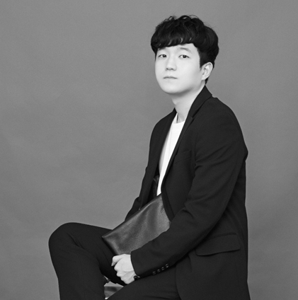

ECCV 2026
Q-TriM: Question-Guided Tri-Modal Attention for Audio–Visual Question Answering
My work on question-guided tri-modal attention for Audio-Visual Question Answering has been accepted to ECCV 2026.
June 2026
Korea University / 고려대학교
M.S. Student in Computer Science at Korea University
Seoul, Republic of Korea
INTRODUCTION
Multimodal AI Researcher | Advancing Vision, Language, and Audio Intelligence for Real-World Impact
RECENT UPDATE
My work on question-guided tri-modal attention for Audio-Visual Question Answering has been accepted to ECCV 2026.
June 2026WORK
IN-EASY (인이지)
Seoul, Republic of Korea
ACADEMICS
M.S. in Computer Science
B.S. in Statistics (Major), Artificial Intelligence (Double Major)
CERTIFICATIONS
Microsoft
Issued Feb 2021Korea Data Agency
Issued Jun 2022Korea Data Agency
Issued Mar 2026Korea Data Agency
Issued Dec 2025RESEARCH OUTPUTS
A shallow and parallel multimodal attention framework for Audio-Visual Question Answering that captures question-guided interactions across video, audio, and text.
Melody-conditioned lyric generation using a SeqGAN-based model.
A multimodal emotion recognition framework integrating audio, text, and physiological signals.
Cryptocurrency investment research using LSTM-based price prediction and strategy design.
INTELLECTUAL PROPERTY
Question-Guided Tri-Modal Attention System for Audio-Visual Question Answering
RECOGNITION
DACON / University of Seoul
Spring Semester, 2023
Korea Information Processing Society
Korea Educational Development Institute